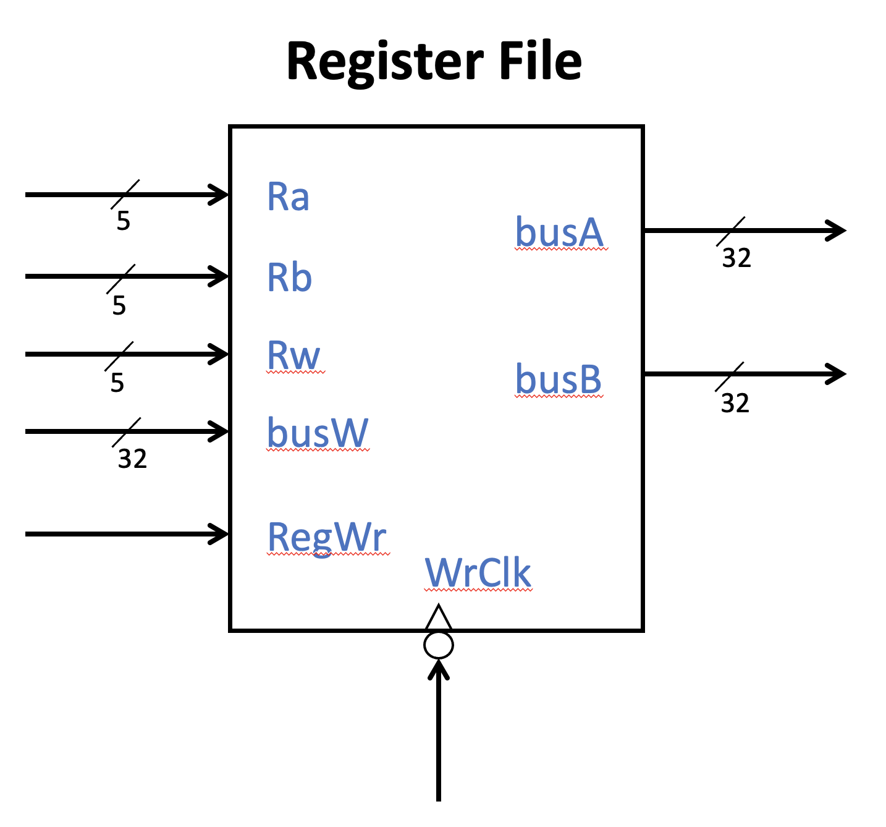
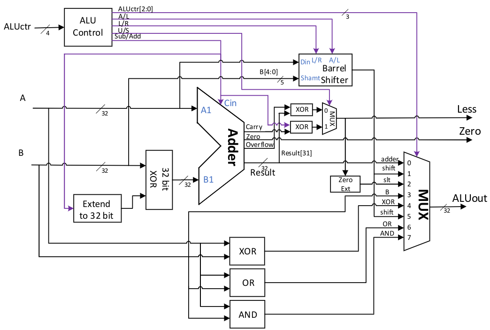
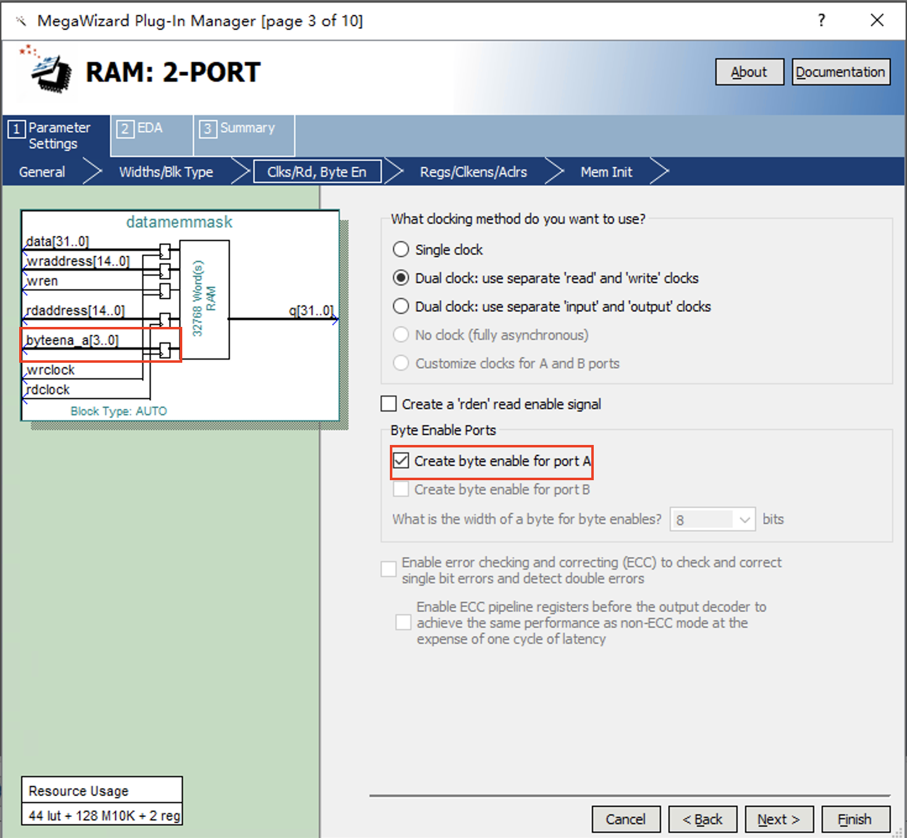

Lab 10: CPU Datapath
I dreamed that I slowly rose up, passing through the data plane, through the data network, into and through Wanfang Network, and finally arrived at an unfamiliar place—a place I had never dreamed of before… This place had infinite space, colors that were serene and indescribable, no horizon, no sky, no earth, or any physical area that humans call the ground.
— “The Fall of Hyperion”, Dan Simmons
The goal of this experiment is to complete three important parts of the CPU data path—the register file, ALU, and data memory—before implementing a single-cycle CPU, and test them through functional simulation.
Register file
A register file is a storage unit in a CPU used to store temporary data during instruction execution. The basic version of the RISC-V CPU RV32I that we are going to implement has 32 registers. RV32I uses the Load Store architecture, which means that all data must first be read from memory into the register using a Load statement before arithmetic and logical operations can be performed. Therefore, RV32I has 32 general-purpose registers, and each arithmetic operation may need to read two source registers and write to one destination register at the same time. To support high-speed, multi-port parallel access to the register file, we cannot directly call general-purpose RAM, but need to write the register file separately in Verilog language.
General Purpose Registers in RV32I
RV32I has a total of 32 32-bit general-purpose registers x0 to x31 (register addresses are 5-bit encoded), among which the content of register x0 is always 0 and cannot be changed.
For aliases of other registers and register usage conventions, see Table tab-regname. It should be noted that some registers are saved by the caller when a function is called, while others are saved by the callee. This should be taken into consideration when mixing C and assembly language programming.
Register |
Name |
Use |
Saver |
|---|---|---|---|
x0 |
zero |
Constant 0 |
– |
x1 |
ra |
Return Address |
Caller |
x2 |
sp |
Stack Pointer |
Callee |
x3 |
gp |
Global Pointer |
– |
x4 |
tp |
Thread Pointer |
– |
x5~x7 |
t0~t2 |
Temp |
Caller |
x8 |
s0/fp |
Saved/Frame pointer |
Callee |
x9 |
s1 |
Saved |
Callee |
x10~x11 |
a0~a1 |
Arguments/Return Value |
Caller |
x12~x17 |
a2~a7 |
Arguments |
Caller |
x18~x27 |
s2~s11 |
Saved |
Callee |
x28~x31 |
t3~t6 |
Temp |
Caller |
Register file Implementation

Fig. 70 Register file block diagram
Figure fig-regfile describes the interface of the register file, which contains 32 32-bit registers.
The register file needs to support two read operations and one write operation simultaneously. Therefore, two read addresses Ra and Rb are required, corresponding to rs1 and rs2 in RISC-V assembly, respectively. The write address is Rw, corresponding to rd. All addresses are 5 bits.
The write data busW is 32 bits, and the write enable control is a one-bit high-level enable RegWr signal.
The output of the register file is two 32-bit register data, busA and busB, respectively.
The register file has a control clock WrClk for writing.
In terms of timing, we can make the read operation asynchronous, that is, the output is immediate when the address changes. Writing can be done on the falling edge of the clock.
Note that register x0 requires special treatment and is always all zeros. Please think about how to implement the x0 register yourself.
ALU
The ALU is one of the core data path components in the CPU, primarily responsible for performing arithmetic and logical operations within the CPU.
We have already implemented a simple ALU in previous experiments. In this experiment, only minor modifications to the ALU are required.
To meet the computational requirements of the RV32I, we have redefined the control signals for the ALU, as shown in Table tab-aluctr.
The logic diagram of the ALU is shown in Figure fig-alu2.
The ALU performs parallel addition, subtraction, shifting, comparison, and XOR operations on the input data.
The final ALUout output is the result of selecting different arithmetic components through an 8-to-1 multiplexer, and the control end of the multiplexer can be directly generated by ALUctr[2:0].
Other control signals in the ALU include: A/L controls whether the shifter performs arithmetic or logical shifting, L/R controls left or right shifting, U/S controls whether the comparison is signed or unsigned, and S/A controls addition or subtraction.
These control signals must be set according to the required operation. Please design them accordingly. Note: Subtraction should be used for comparisons or equality checks.

Fig. 71 ALU logic diagram
ALUctr[3] |
ALUctr[2:0]} |
ALU Operation |
|---|---|---|
0 |
000 |
Select the adder output and perform addition |
1 |
000 |
Select the adder output and perform subtraction |
\(\times\) |
001 |
Select shift register output, left shift |
0 |
010 |
Perform subtraction, select the signed result with the less-than bit set, and output the result. Set Less according to the signed result |
1 |
010 |
Perform subtraction, select unsigned less than set result output, Less set according to unsigned result |
\(\times\) |
011 |
Select the result of ALU input B for direct output |
\(\times\) |
100 |
Select XOR output |
0 |
101 |
Select shift register output, logical right shift |
1 |
101 |
Select shift register output, arithmetic right shift |
\(\times\) |
110 |
Select logic OR output |
\(\times\) |
111 |
Selection Logic AND Output |
Data memory
The data memory stores global variables, stacks, and other data during CPU operation. We recommend implementing a data memory capacity of at least 128 kB. In addition, the data memory needs to support read and write operations on the rising edge. The word length of RV32I is 32 bits, but the data memory not only needs to support 32-bit data access, but also needs to support byte (8-bit) or half-word (16-bit) size reads. Since a single-cycle CPU needs to complete all operations of an instruction within one cycle, we need the data RAM to have independent read and write clocks. The read operation is performed on the rising edge of the system clock (i.e., half of a clock cycle), and the write operation is performed on the falling edge of the system clock (i.e., the end of a clock cycle). It is recommended to use dual-port RAM (RAM 2 PORT) to implement the data memory. The large-capacity SRAM on the DE10-Standard development board supports independent read and write clocks. It generally supports a data storage capacity of more than 128 KB.
To achieve byte-sized (8-bit) or half-byte-sized (16-bit) read/write operations, students need to modify the memory generated by the IP core to a certain extent. During implementation, there is no need to consider address misalignment when performing 4-byte or 2-byte read/write operations. By default, when performing 4-byte read/write operations, the lower two bits of the address are 00, and when performing 2-byte read/write operations, the lowest bit of the address is 0.
Specifically, the MemOP signal is defined as follows: The width is 3 bits, controlling the data memory read/write format. When set to 010, it enables 4-byte read/write operations; when set to 001, it enables 2-byte read/write operations with signed extension; when set to 000, it enables 1-byte read/write operations with signed extension; when set to 101, it enables 2-byte read/write operations with unsigned extension; and when set to 100, it enables 1-byte read/write operations with unsigned extension.
The correspondence between MemOP and memory operations in RV32 is as follows:
Instruction |
MemOP |
Operation |
|---|---|---|
lb rd,imm12(rs1)} |
000 |
\(R[rd] \leftarrow SEXT(M_{1B}[ R[rs1] + SEXT(imm12) ])\) |
lh rd,imm12(rs1)} |
001 |
\(R[rd] \leftarrow SEXT(M_{2B}[ R[rs1] + SEXT(imm12) ])\) |
lw rd,imm12(rs1)} |
010 |
\(R[rd] \leftarrow M_{4B}[ R[rs1] + SEXT(imm12) ]\) |
lbu rd,imm12(rs1)} |
100 |
\(R[rd] \leftarrow \{24'b0, M_{1B}[ R[rs1] + SEXT(imm12) ]\) |
lhu rd,imm12(rs1)} |
101 |
\(R[rd] \leftarrow \{16'b0, M_{2B}[ R[rs1] + SEXT(imm12) ]\) |
sb rs2,imm12(rs1)} |
000 |
\(M_{1B}[ R[rs1] + SEXT(imm12) ] \leftarrow R[rs2][7:0]\) |
sh rs2,imm12(rs1)} |
001 |
\(M_{2B}[ R[rs1] + SEXT(imm12) ] \leftarrow R[rs2][15:0]\) |
sw rs2,imm12(rs1)} |
010 |
\(M_{4B}[ R[rs1] + SEXT(imm12) ] \leftarrow R[rs2]\) |
For read operations, we can read 32 bits of data at a time, then determine whether 8 bits, 16 bits, or 32 bits of data are needed based on MemOP, and finally select the appropriate data based on the lower two bits of the address and concatenate it to expand it into the read result.
For write operations, since it is necessary to write specific 8-bit or 16-bit data within 32 bits without damaging other bits, careful consideration is required in the implementation. We provide the following three solutions for your reference.
Using a dual-port RAM with a single-byte write enable signal supported by the IP core.
This is the method we recommend. As shown in Figure fig-rammask, when configuring dual-port RAM in Quartus in Step 3, we can choose to generate a single-byte write enable signal. For example, after generating a 32-bit RAM, the system will generate a single-byte write enable signal byteena_a[3:0], which is high-active. If you need to write to all four bytes of the 32-bit RAM simultaneously, set this signal to 4’b1111. If you only need to write to the lower 8 bits, set this signal to 4’b0001. Therefore, when performing byte or half-word writes, you only need to set the corresponding single-byte write enable signal and compose the write data in the correct format for a 32-bit write operation.

Fig. 72 Single-byte write enable configuration in dual-port RAM
Read the original data before writing, modify it, and then write 32 bits at once.
The RAM generated by the IP core does not support multiple initializations of data during simulation. We can also use our own rewritten RAM to replace the RAM with single-byte write enable in the above IP core for simulation. We observe that in a single-cycle CPU, the CPU can only perform one of the read or write operations on the memory in a cycle. Therefore, if we want to write 8-bit data without altering the adjacent bits, we can read the unit to be written on the rising edge of the clock instead of the unit corresponding to the read address. After modifying the read data, we can write it back on the falling edge. Note that the write enable signal and write address must be ready on the rising edge of the clock. We provide the following implementation example, whose interface is consistent with the dual-port RAM generated by the IP core.
module testdmem(
byteena_a,
data,
rdaddress,
rdclock,
wraddress,
wrclock,
wren,
q);
input [3:0] byteena_a;
input [31:0] data;
input [14:0] rdaddress;
input rdclock;
input [14:0] wraddress;
input wrclock;
input wren;
output reg [31:0] q;
reg [31:0] tempout;
wire [31:0] tempin;
reg [31:0] ram [32767:0];
always@(posedge rdclock)
begin
if(wren)
tempout<=ram[wraddress];
else
q <= ram[rdaddress];
end
assign tempin[7:0] = (byteena_a[0])? data[7:0] : tempout[7:0];
assign tempin[15:8] = (byteena_a[1])? data[15:8] : tempout[15:8];
assign tempin[23:16] = (byteena_a[2])? data[23:16]: tempout[23:16];
assign tempin[31:24] = (byteena_a[3])? data[31:24]: tempout[31:24];
always@(posedge wrclock)
begin
if(wren)
begin
ram[wraddress]<=tempin;
end
end
endmodule
Non-standard RAM modules
Quartus is unlikely to map such self-written RAM modules to M10K memory modules, which directly leads to insufficient system resources or long compilation times. In actual board code, it is recommended to use IP core-generated RAM for storage capacities greater than 64k.
Use four 8-bit RAM chips and combine them to form a 32-bit memory.
This method uses four 8-bit RAM chips to form a 32-bit RAM, with each 8-bit RAM chip responsible for a specific portion of the 32 bits. For example, RAM0 is responsible for providing data with the lower two bits of the address set to 00, RAM1 is responsible for providing data with the lower two bits of the address set to 01, and so on. If you need to read or write 32-bit data at once, you can connect the corresponding data and the first 30 bits of the address to the four RAM chips, allowing all four RAM chips to be operated simultaneously, resulting in a single read/write operation of \(4\times8=32\) bits of data. If only 8-bit data needs to be written, the RAM write enable port can be controlled based on the lower two bits of the address to write to only one RAM. The main issue with this method is that during memory initialization, each of the four RAMs must be initialized separately, which can be somewhat troublesome.
Lab check-in contents
Online test
Please complete the implementation of the CPU’s register file, ALU, and data memory separately, and pass two online tests.